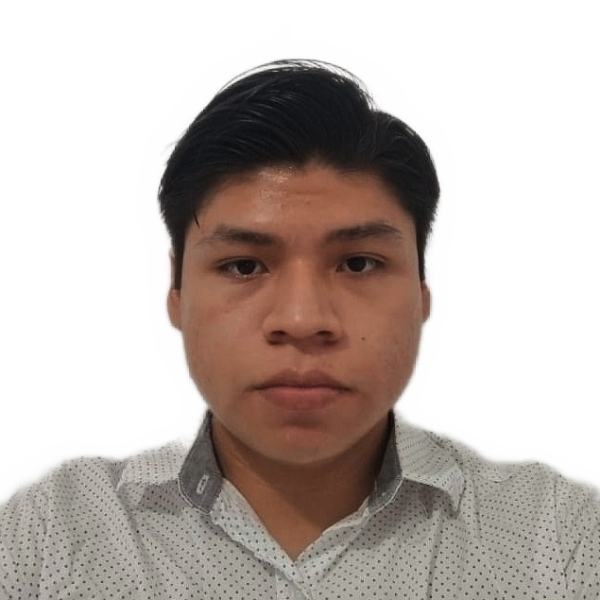
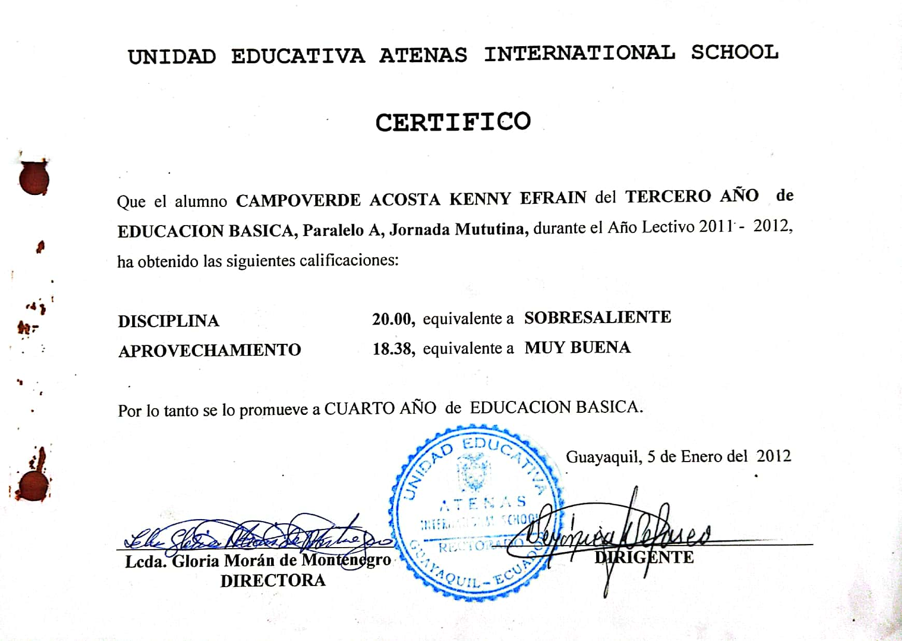
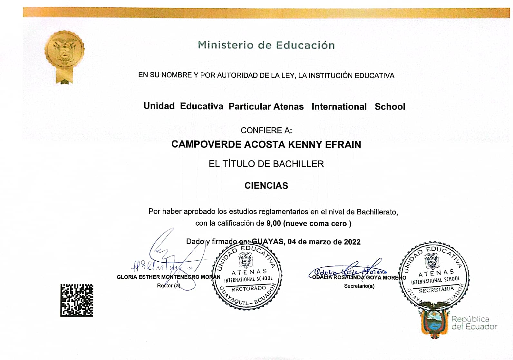
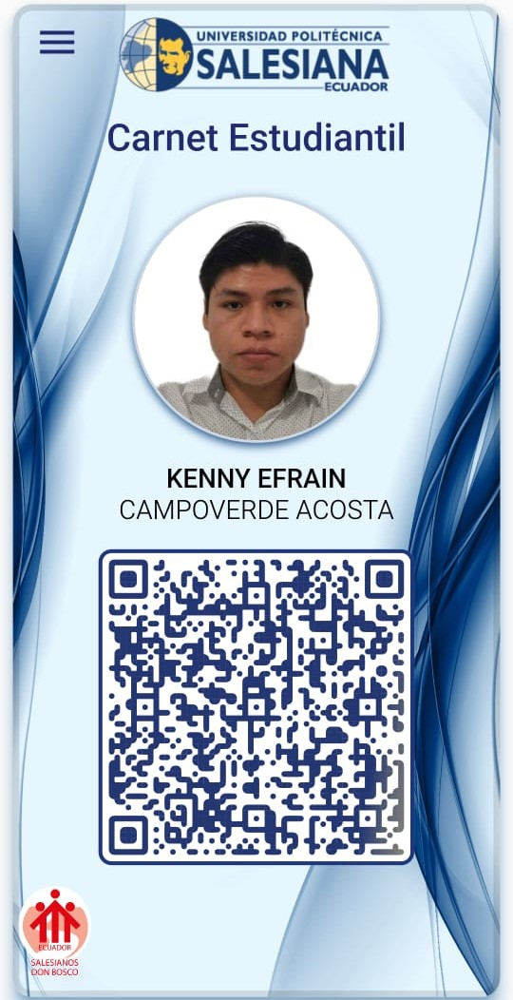

Kenny Efrain Campoverde Acosta
Fecha de nacimiento: 15 de junio del 2003
Estudios Académicos
Primaria: Atenas International School (2008 - 2018)

Secundaria: Atenas International School (2019 - 2022)

Estudios superiores: En proceso

Estudios Varios
Curso de Bash, Udemy (4 horas , 2022-03-01 - 2022-03-4)
Curso de Python, Coursera (30 horas, 2022-06-03 - 2022-06-28)
Curso de GNU/Linux, backtrackacademy (5 horas, 2022-03-06 - 2022-03-12)
Experiencias
Trabajo realizado, Facturador (Compañia Areca SA 1-noviembre-2021 - 30-marzo-2022)